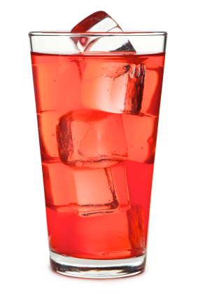
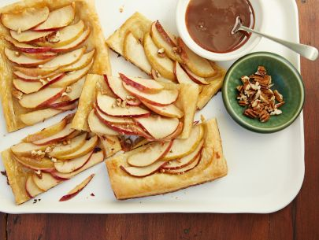

Recipe Lab
Hungarian Goulash (serving size: 4)

Ingredients
- 1/3 cup vegetable oil
- 3 sliced onions
- 2 tablespoons Hungarian sweet paprika
- 3 teaspoons salt
- 1/2 teaspoon ground black pepper
- 3 pounds beef stew meat
- 1 can of tomato paste
- 1 1/2 cups water
- 1 minced clove of garlic
cooking steps
- Heat oil in a large pot or Dutch oven over medium heat. Cook onions in oil until soft, stirring frequently. Remove onions and set aside. (cook time 10 minutes)
- In a medium bowl, combine paprika, 2 teaspoons salt and pepper. Coat beef cubes in spice mixture, and cook in onion pot until brown on all sides. Return the onions to the pot, and pour in tomato paste, water, garlic and the remaining 1 teaspoon salt. Reduce heat to low, cover and simmer, stirring occasionally, 1 1/2 to 2 hours, or until meat is tender.
Pat Cocktail recipe (serving size: 26)

Ingredients
- 1 part 7-Up® soda
- 1 part ginger ale
- 1 part soda water
- 1 part sweet and sour mix
- 1 part tonic water
- 1 dash grenadine syrup
cooking steps
- (optional) add ice to the glass
- add 1/6 ginger ale
- add 1/6 tonic water
- add 1/6 7-Up® soda
- add 1/6 soda water
- add 1/6 sweet and sour mix
- add 1/6 grenadine syrup
apple tart recipe, by Ree Drummond (serving size: 6-8)

Ingredients
- 1 cut in half whole sheet puffed pastry
- nonstick cooking spray
- 1 cup brown sugar
- 1 teaspoon salt
- 1/2 lemon juice
- 3 sliced and coredwhole apples
- caramel sauce
- 1/4 cup chopped pecans
cooking steps(cook time 30 minutes)
- preheat oven to 425 degrees F
- Place the puffed pastry rectangles onto a baking pan that's been sprayed with nonstick spray or lined with parchment paper. Add the sugar, salt and lemon juice to the apples. Stir to combine. Allow to sit for a few minutes.
- Arrange the apple slices on the pastry rectangles in a straight line, overlapping as you go. Bake until the pastry is puffed and golden brown, about 20 minutes.
- Remove from the pan immediately and place on a serving platter. Serve with caramel sauce and chopped pecans.